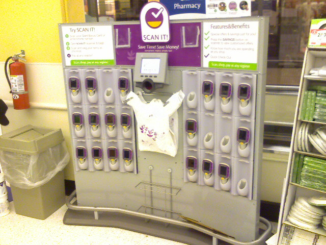
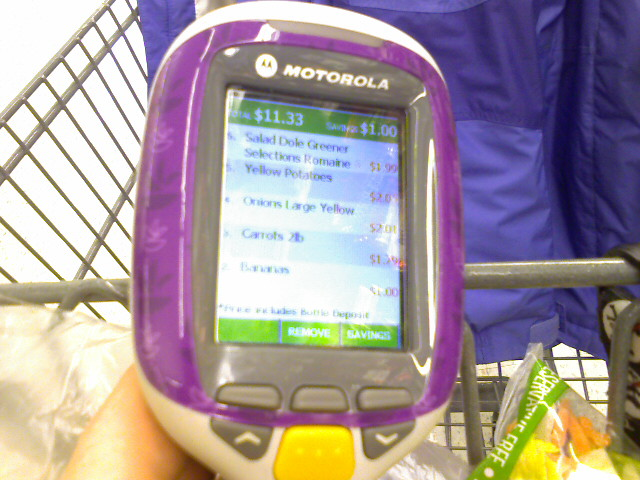
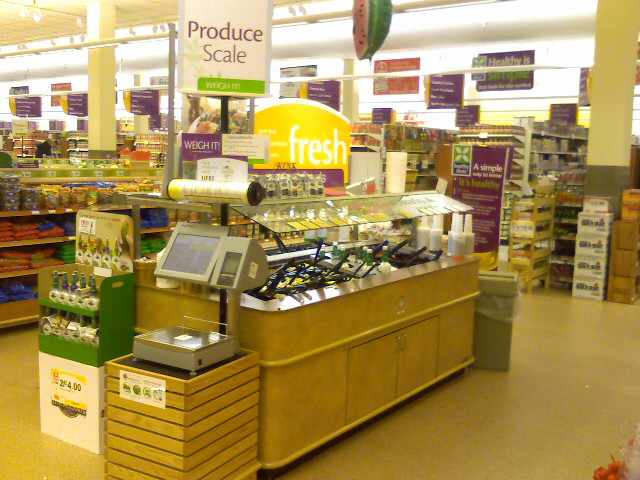
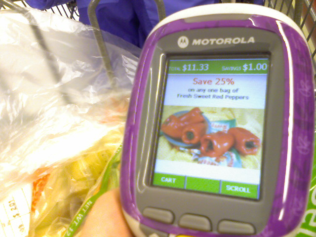

Grocery Shopping With A Scan Gun At Giant
Grocery shopping got a little bit smarter and a whole lot more fun at a nearby Giant. After a day of errands at Arundel Mills mall, Kristina and I stopped at the Giant off of New Hampshire Ave. This store has the Scan It gun which lets shoppers bag their groceries and calculate their total as they shop. We didn’t see a lot of people using them but we found it easy to use and quite handy.
When you first walk in to the store you see this…

This is where you scan your bonus card, pick up a Scan It gun, and grab some plastic bags to fill while you shop. Before you put an item in your cart you simply hold the yellow button down and scan the barcode with the gun. It shows you the price of the item and adds it to your total. Removing an item is as simple as selecting Remove and then scanning the item again.

Scanning fruits and vegetables is a little tricky since they don’t have barcodes on them. There are produce scales around to select and weigh your produce and then a printer prints out a barcode sticker which you can scan.

At the end of your trip you scan a special barcode at the register and hand the scanner to the cashier. Then you just pay and off you go!
The only negative aspect of the process is the Scan It device displays specials with a loud cash register sound every so often. Most of the specials weren’t relevant to what we were shopping for. The brochure says “there are extra savings exclusively with SCAN IT!” but I didn’t notice anything. Kristina and I shop with a list which means we tend to ignore anything that isn’t on it.

Technology like this is a good stop gap until RFID technology overtakes the old fashioned barcode. I think within the next 10 years, there will be a console on every grocery cart that tracks what items go into the cart as well as helping shoppers identify where things are located. Having more information while I shop is a welcome improvement. This eliminates any confusion about pricing and helps us stay within our grocery budget. Now there will be no more surprises at the checkout.
I hope this technology makes it to the Giant where we usually shop at, though we might just go a little bit further to this Giant for our weekly grocery trips.

I love these things. the Bloom in Wintergreen plaza Rockville has had them since it opened. Its great when you bring your own bags because when you get to the checkout you’ve already bagged everything.
The Montrose Crossing Giant just added this but the instructions on the register were incorrect a few months ago when I was there. Hopefully they have fixed them by now.
Reply
Giant provides plastic bags along with the scan gun so you can bag while you shop. We underestimated how many bags we needed so the cashier had to help us out at the checkout.
Just imagine if these were internet enabled and linked up with your Facebook or FriendFeed account.
This is pretty cool. I could see it being annoying if you are buying tons of produce, though. That said, if a store near me had it, I think I’d try it out.
Reply
A ton of produce? What are you the chef at a zoo? The process is no different than what happens at checkout, it’s just you do it instead of watching someone else do it for minimum wage.
Nice writeup. Liked the pictures… It’s interesting, in order to check out quickly, they turn you into the minimum wage bagger – which make shopping feel like you need three arms to manage everything (or two people).
Reply
Yea you would definitely need a helper for this. Although another blog I read about this recommended bringing cardboard boxes with you.
They have had these at the Bloom in Scaggsville for years! I never used them tho…
Reply
I went to three Giant Food’s in Baltimore, the Rotunda, the one on York road, and the one in Towson, I couldn’t find them. Where is a Gian in Baltimore with this?
Reply
You might try Giant Store #0363 in Dundalk, MD. According to Webmommy from this forum, she said she used one and her location is in Dundalk -> http://talk.baltimoresun.com/s.....?p=4027426
Are there any Giant’s in Baltimore city with this technology?
Reply
The Super Giant in Oakton, VA, just got there’s maybe couple/weeks ago
Reply
How does the check out process work? What is to stop someone from stealing items? Do they have to place there bags on a scale when they check out? Lastly, what can you go through a none self checkout line and how does that work?
Reply
When you check out you put the scan gun on the conveyor belt and the cashier scans a special barcode to signal your done shopping. Then all of your data in the scangun is transferred to the cash register system so you can pay and a receipt is printed.
There’s nothing really stopping you from putting extra groceries in your bag and not paying for them. It’s also pretty easy to futz with the scale (ex. 10 apples = 0.1 lbs, sure why not?).
I’ve never felt compelled to cheat my grocery store but their are certainly weaknesses in the system.
[…] about scanning your own items as you walk around with the store. Various organizations have tried this idea and variations on it. I haven’t seen it stick anywhere as of yet. Why […]
How come this resource of shopping is not in California?!! It has been over a year since these comments were given – has there been anymore stores that have these?
Reply